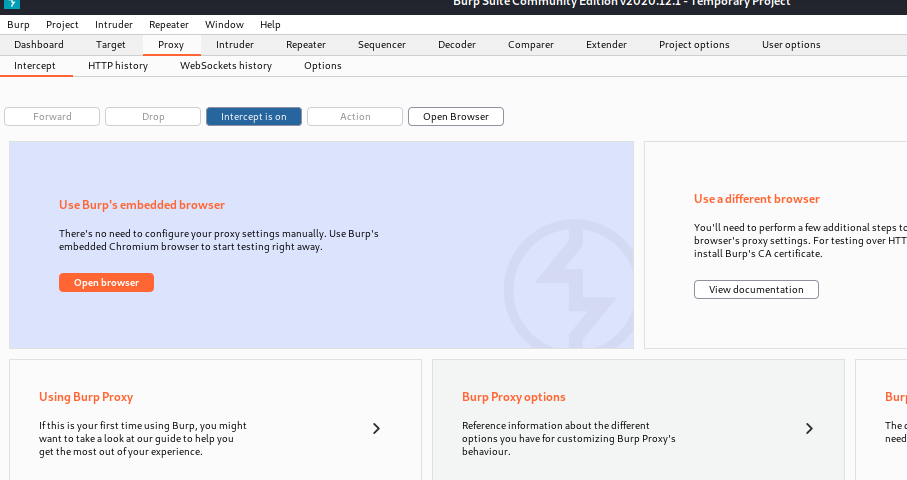

will allow us to switch between proxies very easily
https://addons.mozilla.org/en-US/firefox/addon/foxyproxy-standard/
download from here

now switch on burp in foxy proxy
got this after reloading the site